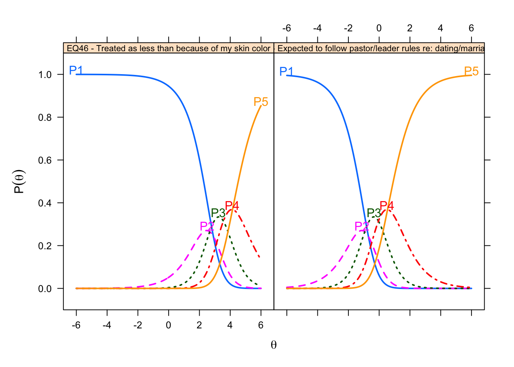

Item Analysis in IRT
In this chapter, we examine the technical quality of the SHAS items within the framework of item response theory. We begin by introducing IRT and discussing its advantages. Then we document our IRT item analyses. We conclude by summarizing what we learn from these analyses to help us refine these 66 items and possibly develop better ones in the future.
Rating Scale Model (RSM)
The first IRT model is the Rating Scale Model (RSM) (Andrich 1978). The model is an extension of the Rasch model (designed for dichotomous items) for use with polytomous items based on rating scales such as Likert scales of agreement (Embretson and Reise 2000) and estimates the probability of choosing from among several response options given an examinee’s location on the latent trait (level of lifetime exposure to spiritual abuse). More specifically, the increase in difficulty involved in choosing from between two response categories is called a “step parameter”. The RSM assumes that all items use the same rating scale. As a Rasch model, it assumes that all items discriminate equally well and thus fixes the discrimination parameter to 1. The model also fixes the step parameters of all the items on the premise that the response categories are the same for all items. What the RSM frees to vary are the item difficulty parameters. Thus the focus of the RSM is the differences in item difficulties. If all of these assumptions are true – that the items and their rating scales differentiate examinees equally well and differ only in overall difficulty – then the observed pattern of item responses will closely match the pattern of items responses expected by the RSM and the model will fit.
| b1 | b2 | b3 | b4 | c | outfit | z.outfit | infit | z.infit | |
|---|---|---|---|---|---|---|---|---|---|
| EQ46 - Treated as less than because of my skin color | 0.13 | -0.11 | 0.78 | 1.37 | -2.78 | 2.37 | 8.95 | 1.89 | 9.79 |
| EQ41 - Denied opportunities to serve because of my sexual orientation | 0.13 | -0.11 | 0.78 | 1.37 | -1.90 | 2.63 | 14.93 | 2.26 | 20.18 |
| EQ17 - Treated as less than b/c my sexual orientation | 0.13 | -0.11 | 0.78 | 1.37 | -1.73 | 1.89 | 10.09 | 2.26 | 22.15 |
| EQ47 - Medical care being postponed/withheld for religious reasons | 0.13 | -0.11 | 0.78 | 1.37 | -1.40 | 0.99 | -0.18 | 1.05 | 1.46 |
| EQ60 - Encouraged by leader to stay in abusive marriage | 0.13 | -0.11 | 0.78 | 1.37 | -1.37 | 1.31 | 4.80 | 1.47 | 11.55 |
| EQ55 - Hearing cultural references in sermons unfamiliar to my race/eth. subculture | 0.13 | -0.11 | 0.78 | 1.37 | -1.19 | 2.68 | 21.37 | 1.62 | 15.75 |
| IQ72 - Feeling as if God harmed me directly | 0.13 | -0.11 | 0.78 | 1.37 | -1.11 | 1.03 | 0.61 | 1.12 | 3.76 |
| IQ81 - Nightmares about my negative religious experiences | 0.13 | -0.11 | 0.78 | 1.37 | -0.91 | 0.79 | -4.67 | 0.87 | -4.50 |
| EQ10 - Asked to give up personal goals by pastor | 0.13 | -0.11 | 0.78 | 1.37 | -0.82 | 0.99 | -0.28 | 1.1 | 3.28 |
| EQ65 - Cut off/shunned by more religious family members | 0.13 | -0.11 | 0.78 | 1.37 | -0.81 | 1.14 | 2.99 | 1.15 | 5.14 |
| EQ26 - Pressured to forgive abuser while abuse was ongoing | 0.13 | -0.11 | 0.78 | 1.37 | -0.76 | 1.2 | 4.29 | 1.18 | 5.96 |
| EQ24 - Expected to consult pastor/leader before making non-religious decisions | 0.13 | -0.11 | 0.78 | 1.37 | -0.74 | 0.92 | -1.77 | 0.99 | -0.45 |
| EQ23 - Prayer replacing needed medical interventions | 0.13 | -0.11 | 0.78 | 1.37 | -0.69 | 0.92 | -1.81 | 0.98 | -0.55 |
| EQ27 - Denied opportunities to serve b/c of my gender | 0.13 | -0.11 | 0.78 | 1.37 | -0.67 | 2.02 | 18.55 | 1.77 | 22.71 |
| EQ31 - Shunned/ignored by pastor/church/group | 0.13 | -0.11 | 0.78 | 1.37 | -0.56 | 0.99 | -0.19 | 0.98 | -0.82 |
| EQ30 - Deterred from seeking mental health treatment/counseling/medication | 0.13 | -0.11 | 0.78 | 1.37 | -0.54 | 0.86 | -3.73 | 0.93 | -2.56 |
| EQ43 - Shamed by pastor/group for poor spiritual/moral performance | 0.13 | -0.11 | 0.78 | 1.37 | -0.53 | 0.71 | -8.02 | 0.75 | -10.38 |
| IQ68 - Anxiety attacks triggered by religious stimuli | 0.13 | -0.11 | 0.78 | 1.37 | -0.53 | 0.89 | -2.78 | 0.97 | -1.09 |
| EQ52 - Blamed for harm I suffered rather than blaming who harmed me | 0.13 | -0.11 | 0.78 | 1.37 | -0.49 | 0.71 | -8.14 | 0.79 | -8.38 |
| IQ70 - Feeling betrayed by God | 0.13 | -0.11 | 0.78 | 1.37 | -0.47 | 1.23 | 5.60 | 1.16 | 5.92 |
| EQ49 - Leadership/group protecting and elevating abusive individuals | 0.13 | -0.11 | 0.78 | 1.37 | -0.44 | 0.8 | -5.59 | 0.84 | -6.25 |
| EQ16 - Church/community abandoning me in difficult time | 0.13 | -0.11 | 0.78 | 1.37 | -0.43 | 0.92 | -2.15 | 0.96 | -1.60 |
| EQ20 - Members pressured to give money despite financial hardship | 0.13 | -0.11 | 0.78 | 1.37 | -0.41 | 1.03 | 0.82 | 1.16 | 5.99 |
| EQ57 - Developing mental/physical ailments from conforming to group/leader’s expectation | 0.13 | -0.11 | 0.78 | 1.37 | -0.40 | 0.85 | -4.18 | 0.98 | -0.91 |
| EQ62 - Scripture used to justify physical violence | 0.13 | -0.11 | 0.78 | 1.37 | -0.40 | 0.95 | -1.43 | 1 | 0.08 |
| EQ59 - Pastor/group blame victim for their abuse | 0.13 | -0.11 | 0.78 | 1.37 | -0.39 | 0.68 | -9.60 | 0.73 | -11.53 |
| EQ21 - Taught I would risk Hell if left my church/group | 0.13 | -0.11 | 0.78 | 1.37 | -0.36 | 1.21 | 5.20 | 1.29 | 10.17 |
| EQ50 - Treated as less than because of my gender | 0.13 | -0.11 | 0.78 | 1.37 | -0.32 | 1.68 | 15.51 | 1.73 | 23.36 |
| IQ82 - Having trouble navigating life outside my church/community | 0.13 | -0.11 | 0.78 | 1.37 | -0.32 | 1.04 | 1.03 | 1.05 | 1.90 |
| EQ64 - Witnessing women pressured to stay in unfaithful/abusive marriages | 0.13 | -0.11 | 0.78 | 1.37 | -0.30 | 0.88 | -3.53 | 0.89 | -4.64 |
| EQ28 - Leadershi/group protecting abusive individuals | 0.13 | -0.11 | 0.78 | 1.37 | -0.29 | 0.81 | -5.67 | 0.81 | -7.75 |
| EQ40 - Threatening Divine punishment to keep group members in line | 0.13 | -0.11 | 0.78 | 1.37 | -0.27 | 0.84 | -4.61 | 0.94 | -2.59 |
| EQ63 - Shamed by pastor/group for raising questions or concerns | 0.13 | -0.11 | 0.78 | 1.37 | -0.24 | 0.67 | -10.68 | 0.7 | -13.07 |
| EQ19 - Behavior excessively monitored by pastor/group | 0.13 | -0.11 | 0.78 | 1.37 | -0.22 | 0.78 | -6.85 | 0.84 | -6.60 |
| EQ51 - Extreme pressure to be pastor/missionary/spiritual leader | 0.13 | -0.11 | 0.78 | 1.37 | -0.21 | 1.28 | 7.21 | 1.28 | 10.34 |
| EQ53 - Scripture used to justify abusive parent-child behavior | 0.13 | -0.11 | 0.78 | 1.37 | -0.18 | 0.84 | -4.75 | 0.92 | -3.46 |
| IQ79 - Distrust of God | 0.13 | -0.11 | 0.78 | 1.37 | -0.16 | 1.21 | 5.76 | 1.11 | 4.38 |
| EQ34 - Scripture used to justify physical punishment/severe discipline | 0.13 | -0.11 | 0.78 | 1.37 | -0.07 | 1.09 | 2.58 | 1.07 | 2.62 |
| EQ29 - Feeling special when in pastor’s good graces; otherwise ignored | 0.13 | -0.11 | 0.78 | 1.37 | -0.06 | 0.99 | -0.31 | 1 | -0.12 |
| IQ73 - Self-hatred or self-loathing | 0.13 | -0.11 | 0.78 | 1.37 | -0.04 | 1.06 | 1.77 | 1.06 | 2.46 |
| EQ11 - Disagree w/pastor portrayed as evil | 0.13 | -0.11 | 0.78 | 1.37 | -0.01 | 0.76 | -8.14 | 0.78 | -9.70 |
| EQ7 - Pastor speaking on God’s behalf | 0.13 | -0.11 | 0.78 | 1.37 | 0.00 | 1.24 | 6.91 | 1.17 | 6.60 |
| EQ58 - Terror/horror used to motivate religious decisions | 0.13 | -0.11 | 0.78 | 1.37 | 0.02 | 0.85 | -5.02 | 0.88 | -5.07 |
| EQ42 - Seeing others shamed/shunned by pastor/leader/group | 0.13 | -0.11 | 0.78 | 1.37 | 0.06 | 0.67 | -11.63 | 0.67 | -15.34 |
| EQ44 - Love/acceptance offered only for high spiritual/moral performance | 0.13 | -0.11 | 0.78 | 1.37 | 0.09 | 0.67 | -11.67 | 0.69 | -14.06 |
| EQ56 - Being made to feel I was crazy/weird for doubts/questions | 0.13 | -0.11 | 0.78 | 1.37 | 0.21 | 0.62 | -14.46 | 0.64 | -16.68 |
| EQ18 - Church/pastor discourage critical thinking | 0.13 | -0.11 | 0.78 | 1.37 | 0.22 | 0.74 | -9.22 | 0.76 | -10.50 |
| EQ45 - Developmentally-inappropriate/anxious Hell/Satan/demons taught to young children | 0.13 | -0.11 | 0.78 | 1.37 | 0.24 | 0.99 | -0.23 | 1.02 | 0.98 |
| IQ78 - A lack of self-worth | 0.13 | -0.11 | 0.78 | 1.37 | 0.24 | 0.97 | -0.90 | 0.94 | -2.58 |
| EQ36 - Mental/physical problems interpreted as spiritual/moral weakness | 0.13 | -0.11 | 0.78 | 1.37 | 0.26 | 0.73 | -9.85 | 0.73 | -11.89 |
| EQ61 - Developmentally-inappropriate/anxious end times descriptions taught to young children | 0.13 | -0.11 | 0.78 | 1.37 | 0.26 | 1.03 | 0.92 | 1.07 | 2.70 |
| IQ74 - Sadness over the loss of my faith/religious community | 0.13 | -0.11 | 0.78 | 1.37 | 0.26 | 1.2 | 6.09 | 1.08 | 3.30 |
| EQ32 - Feeling unable to express unhappiness | 0.13 | -0.11 | 0.78 | 1.37 | 0.28 | 0.81 | -6.55 | 0.8 | -8.51 |
| IQ76 - Feeling I wasted years of my life in a church/set of beliefs | 0.13 | -0.11 | 0.78 | 1.37 | 0.29 | 0.96 | -1.48 | 0.99 | -0.45 |
| EQ54 - Being explicitly taught to distrust my intuitions | 0.13 | -0.11 | 0.78 | 1.37 | 0.40 | 0.85 | -5.40 | 0.84 | -6.85 |
| EQ37 - Made to feel less spiritually mature than pastor/leadership | 0.13 | -0.11 | 0.78 | 1.37 | 0.42 | 0.81 | -6.98 | 0.81 | -8.13 |
| EQ38 - Unrealistic demands placed on my moral/religious behavior | 0.13 | -0.11 | 0.78 | 1.37 | 0.43 | 0.66 | -13.03 | 0.69 | -14.23 |
| IQ71 - Avoiding religious activities/settings to reduce distressing feelings | 0.13 | -0.11 | 0.78 | 1.37 | 0.47 | 0.83 | -6.22 | 0.83 | -7.16 |
| IQ69 - Lack of spiritual direction/purpose | 0.13 | -0.11 | 0.78 | 1.37 | 0.48 | 1.18 | 5.82 | 1.02 | 0.90 |
| IQ80 - Feeling isolated | 0.13 | -0.11 | 0.78 | 1.37 | 0.54 | 0.85 | -5.39 | 0.8 | -8.83 |
| EQ39 - Made to feel shame over natural sexual desires (not actions) | 0.13 | -0.11 | 0.78 | 1.37 | 0.55 | 1.01 | 0.46 | 1.03 | 1.40 |
| IQ77 - Anger upon reflecting on negative religious experiences | 0.13 | -0.11 | 0.78 | 1.37 | 0.55 | 0.64 | -14.23 | 0.62 | -17.61 |
| EQ35 - Taught to distrust my emotions | 0.13 | -0.11 | 0.78 | 1.37 | 0.62 | 0.95 | -1.66 | 0.88 | -5.06 |
| EQ25 - Feeling unable to raise questions and issues | 0.13 | -0.11 | 0.78 | 1.37 | 0.69 | 0.7 | -11.67 | 0.7 | -13.52 |
| EQ66 - Others treated as less than due to their sexual orientation | 0.13 | -0.11 | 0.78 | 1.37 | 0.77 | 0.99 | -0.33 | 0.96 | -1.55 |
| EQ22 - Expected to follow pastor/leader rules re: dating/marriage/sex | 0.13 | -0.11 | 0.78 | 1.37 | 0.83 | 1.1 | 3.38 | 1.16 | 5.92 |

Figure 2: Category Response Curves for the Rating Scale Model
Table 2 reports the item parameters and fit statistics estimated by the RSM for all 66 SHAS items. Columns b1 to b4 report the estimated thresholds (or step parameters). These values are the same for all items. Figure 2 shows plots of two items attempt to convey this information visually. In both plots, the horizontal axis is the scale of the latent trait – in this case, overall lifetime exposure to spiritual abuse – expressed in logits ranging from -6 to +6. The vertical axis is the probability of selecting a given response (such as “Always”) given the examinee’s position on the continuum of the latent trait (or overall level of lifetime exposure to spiritual abuse). The blue line is the probability of selecting “Never” for examinees ranging from low to high lifetime spiritual abuse. Examinees with low levels of overall spiritual abuse are most likely to select “Never”. Those with high levels of overall spiritual abuse are most likely to select “Always.” But examinees with more moderate or average levels of spiritual abuse are more likely to select P3 or P4, “Sometimes” or “Often”, respectively. In both plots, as in the step parameters reported in Table xxx, the pattern of response categories is the same.
What does vary between items, in this model, is the difficulty parameter (also called the item location). This is shown in the “c” column of Table 2 and the items are sorted by c. This parameter represents the location of the item on the logit scale of the latent trait. It represents the location of the item on the continuum of the latent trait (lifetime spiritual abuse). It raises the question: Does the item represent the “most” spiritual abuse? The least? Or somewhere in the middle?

Figure 3: Distribution of Item Locations
Figure 3 is a histogram of the distribution of item difficulty parameters. The distribution is negatively skewed with most items clustered slightly above the average level of spiritual abuse and several items measuring very low levels of lifetime exposure to spiritual abuse.
Item fit statistics are also reported in Table 2. These show how closely the observed pattern of item responses fits the pattern of item responses predicted by the particular IRT model (Rasch, partial credit, etc.). They do this by means of chi-square statistics which examine the cumulative difference the observed pattern of item responses and the pattern of item responses that the model would expect. Two fit statistics commonly used in IRT models are the infit mean square (MNSQ) and the outfit mean square (MNSQ) (Bond and Fox 2015). The infit statistic places greater emphasis on unexpected responses that are close to the examinees and item location. The outfit is sensitive to unexpected responses that are far from the location. The expected value of infit or outfit for each item is 1.0, with a range of acceptable values ranging from 0.5 to 1.5. Values outside these boundaries indicate a lack of fit between items and the model. All but six of the 66 items had infit and outfit statistics within the acceptable range from 0.5 to 1.5. The large outfit values mean the observed patterns of responses to these items differed substantially from the patterns of responses expected by the PCM. These items capture the experiences of women, people of color, and LGBTQ persons.
To assess the overall fit of the model to the item response data we use two statistics. The first is the Root Mean Square Error of Approximation (RMSEA). The suggested cutoff for RMSEA is .06. The second is the CFI. The suggested cutoff for the CFI is .95. Model fit statistics for the SHAS items are presented in Table 3.
| M2 | df | p | RMSEA | RMSEA_5 | RMSEA_95 | TLI | CFI | |
|---|---|---|---|---|---|---|---|---|
| RSM | 61561.13 | 2339 | 0 | 0.092 | 0.092 | 0.093 | 0.957 | 0.953 |
The obtained RMSEA value = .092 (95% CI[.092, .093]) exceeds the cutoff of .06. The CFI = .953 meets the recommended .95 threshold. Together these statistics offer weak evidence that the RSM fits the SHAS items.
Summary. The Rating Scale Model is an appropriate model for polytomous items such as the SHAS items that all use the same Likert scale of frequency. Of the 66 items, only six had outfit or infit statistics beyond the acceptable ranges. The CFI value of .953 offers further evidence that the Rating Scale Model fits the SHAS items.